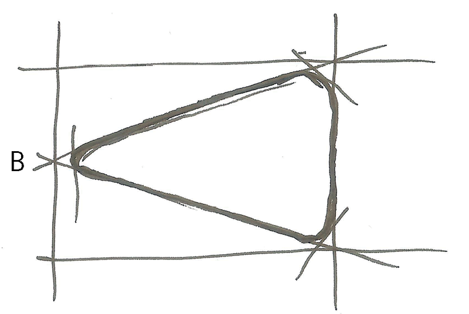

<div class="container">
  <div id="contents" class="col-md-12 main-content"><h1 xmlns="http://www.w3.org/1999/xhtml" id="toc-id-3">Hoe om dinge met tekeninge te sê</h1>
    <figure xmlns="http://www.w3.org/1999/xhtml"><div class="frame-3"></div>
	<figcaption>Figuur 1 </figcaption></figure>    <figure xmlns="http://www.w3.org/1999/xhtml"><div class="frame-3"></div>
	<figcaption> Figuur 2: Tekeninge in 'n ateljee vir die ontwerp van
skoene
</figcaption></figure><div xmlns="http://www.w3.org/1999/xhtml" class="frame-3"></div>
	<figcaption xmlns="http://www.w3.org/1999/xhtml">Figuur 3:Tekeninge vir die ontwerp van 'n stoel
</figcaption><li xmlns="http://www.w3.org/1999/xhtml">
    <p class="x--Body-investigation-hanging">  Hoeveel deure moet dit
hê?</p><hr/><div class="aside">
      <p class="x--Body-box-no-indent">Wanneer jy hierdie vrae
beantwoord is jy besig om
'n 
<b>ontwerpspesifikasie
</b>vir
die kas te skryf. Wanneer jy
beplan om iets te maak is dit
nuttig om eers na te dink oor
wat jy wil maak en jou idees
neer te skryf. Jy kan dan
jou ontwerpspesifikasie aan
iemand anders gee om te lees.
Daardie persoon mag dalk 'n
paar nuttige voorstelle maak
wat jou ontwerp sal verbeter.
Sonder 'n geskrewe ontwerp-
spesifikasie is dit moeilik om
goeie voorstelle van ander
mense te kry.
</p>
    </div></li> 
    <li xmlns="http://www.w3.org/1999/xhtml">

    <p class="x--Body-investigation-hanging"> Hoeveel rakke moet dit hê?
</p>
    <hr/></li><li xmlns="http://www.w3.org/1999/xhtml">
    <p class="x--Body-investigation-hanging">Waarvan moet dit gemaak word?
</p>
    <hr/></li><li xmlns="http://www.w3.org/1999/xhtml">
    <p class="x--Body-investigation-hanging"> Hoe hoog en hoe breed moet dit
wees?
</p>
    <hr/></li><li xmlns="http://www.w3.org/1999/xhtml">
    <p class="x--Body-investigation-hanging"> Hoe diep moet dit wees?
</p><hr/></li>
    <li xmlns="http://www.w3.org/1999/xhtml">
    <p class="x--Body-investigation-hanging para-style-override-11"> Maak
'n rowwe skets
in die spasie hieronder om te wys hoe jy dink die kas sal
lyk.
</p>

    <div></div></li>
        
        
        <li xmlns="http://www.w3.org/1999/xhtml">
    <p class="x--Body-investigation-hanging--1-3- para-style-override-18">
    Maak 'n groter en beter skets van die kas. Skryf 
  aantekeninge langs jou tekening om te wys waar 
  die deure en rakke is. Skryf ook aantekeninge wat 
  sê hoe groot die verskillende onderdele van die kas 
   moet wees, in millimeters (mm) 
.</p>

    <div class="aside">Die lengtes van die verskillende
onderdele van 'n voorwerp
 word die
<b>afmetings
</b>genoem.
Dinge soos die hoogte,
breedte en diepte van die kas,
asook die afstand tussen die
rakke, word die afmetings
genoem.

    </div>

   <div></div></li>
       
       <li xmlns="http://www.w3.org/1999/xhtml">
    <p class="x--Body-investigation-hanging--1-3-"> Moet die regte kas drie keer
groter as jou tekening 
wees? 
</p>
<hr/><div class="aside">
      <p class="x--Body-box-no-indent">'n Werklike voorwerp is dikwels
 verskeie kere groter as die
tekening daarvan. As die
voorwerp vyf keer groter as
die tekening is, sê ons die
<b>skaal
</b>van die tekening is
“1 tot 5”. Dit word geskryf
   “1:5”.
.</p>
    </div>
  </li>  
<li xmlns="http://www.w3.org/1999/xhtml">
    <p class="x--Body-investigation-hanging--1-3-"> Hoeveel groter as jou
tekening moet die regte kas
wees?
</p>
    <hr/> 
</li>
<div xmlns="http://www.w3.org/1999/xhtml" class="frame-3"></div>
	<figcaption xmlns="http://www.w3.org/1999/xhtml">Figuur 4</figcaption><span xmlns="http://www.w3.org/1999/xhtml" class="char-style-override-6"><b>Strepieslyne
</b></span> dui dinge aan wat versteek is, soos die
voet wat binne 'n skoen versteek is.
<li xmlns="http://www.w3.org/1999/xhtml">
    <p class="x--Body-investigation-hanging"> Gebruik strepieslyne om die
liggame van die twee
mense in die motor hieronder aan te dui.
</p>
</li>
<li xmlns="http://www.w3.org/1999/xhtml">
	<figure><p class="x--Body-Text"><span> </span> </p>
	<figcaption> Figuur 5 </figcaption></figure>
    <p class="x--Body-investigation-hanging"> Trek strepieslyne op die tekening
van 'n kas op die volgende bladsy om vier
rakke binne die kas aan te dui.
</p></li>
<b xmlns="http://www.w3.org/1999/xhtml">afmetings
</b>genoem kan word, word
deur 'n dun afmetingslyn met pyle aan beide kante
gewys. Hulle word 'n klein entjie weg van voorwerpe
geteken.
<p xmlns="http://www.w3.org/1999/xhtml">Net soos wat jy 'n taal soos Afrikaans nodig het om
met
ander mense te kommunikeer,is sketse en tekeninge 'n
“taal”. En soos Afrikaans
het hulle reëls om ons te help om hulle
beter te verstaan. Hierdie reëls word <b>tekenwerkkonvensies</b> genoem.
 </p>
    <div xmlns="http://www.w3.org/1999/xhtml" class="frame-3"></div> <figcaption xmlns="http://www.w3.org/1999/xhtml"><p>Figuur 6</p></figcaption><figure xmlns="http://www.w3.org/1999/xhtml"> <figcaption><p>Figuur 7</p></figcaption></figure><ul xmlns="http://www.w3.org/1999/xhtml"><li class="x--Body-text-bullet"> dun, dowwe lyne as gidslyne te
gebruik.
</li>

        <li class="x--Body-text-bullet"> 
        <span>dik lyne te gebruik om die sigbare kante van 'n voorwerp te
wys,
soos die kante wat jy van voor af kan sien; en

</span></li>

        <li class="x--Body-text-bullet">   'n soliede lyn te gebruik om
hierdie
kante aan te dui.
</li>
      </ul><p xmlns="http://www.w3.org/1999/xhtml">Jy het ook geleer dat afmetings gewys word deur die lengte van
'n voorwerp bo 'n afmetingslyn te skryf.
</p><p xmlns="http://www.w3.org/1999/xhtml">
'n Afmetingslyn het klein pyltjies aan beide eindpunte. Hierdie
pyltjies raak aan klein verlengingslyne wat aandui waar die
lengte begin en waar dit eindig.</p><p xmlns="http://www.w3.org/1999/xhtml">Strepieslyne dui weggesteekte
besonderhede op tekeninge aan.
</p>

    <div xmlns="http://www.w3.org/1999/xhtml" class="frame-3"></div><figcaption xmlns="http://www.w3.org/1999/xhtml"><p>Figuur 8</p></figcaption><li xmlns="http://www.w3.org/1999/xhtml">
    <p class="x--Body-investigation-hanging"> Benoem die onderdele van die pomp
wat in
hierdie tekening gewys word.
</p>
    <hr/></li>
    <li xmlns="http://www.w3.org/1999/xhtml">

    <p class="x--Body-investigation-hanging"> Hoe lank is die buitebuis van
hierdie fiets pomp?
</p><hr/><div class="aside">
      <p class="x--Body-box-no-indent">Sketse en tekeninge is
belangrike maniere om idees
aan te dui en te kommunikeer.
Vir ontwerpers en tegnoloë  is
tekeninge en sketse dieselfde
as om aantekeninge te maak.
Dit herinner hulle aan hul idees
en help hulle om hierdie idees
met ander te deel. Sketse
word gewoonlik sonder die
hulp van enige instrumente
gemaak. Al wat jy nodig het, is
'n potlood en papier.
</p>
    </div></li>
   <li xmlns="http://www.w3.org/1999/xhtml">

    <p class="x--Body-investigation-hanging"> Hoe lank is die stootstang? Hoe
weet jy dit?
</p>
    <hr/>
 

    <p class="x--Body-Text">Kyk na die tekening van 'n ander fietspomp
hieronder. Hierdie tekening is
akkuraat, dus noem ons dit 'n skaaltekening. Dit is vier keer kleiner as
die
regte
pomp. Ons sê dit is geteken op 'n skaal van 1:4. Dit beteken dat as
jy die
lengte
van die buitebuis in hierdie tekening meet, dit vier keer kleiner sal wees as
die
afmetings van die buitebuis van die regte pomp.
</p>

    <div>
	<figure><div class="frame-3"></div>
	<figcaption> Figuur 9: Fietspomp Skaal 1:4
 </figcaption></figure></div></li>

    <li xmlns="http://www.w3.org/1999/xhtml">

    <p class="x--Body-investigation-hanging"> Hoekom word die buitebuis van die
pomp met soliede lyne geteken?
</p>
    <hr/></li><li xmlns="http://www.w3.org/1999/xhtml">
    <p class="x--Body-investigation-hanging"> Watter ander onderdeel van hierdie
pomp word met soliede lyne geteken?
</p>
    <hr/></li><li xmlns="http://www.w3.org/1999/xhtml">

    <p class="x--Body-investigation-hanging"> Waarom is 'n gedeelte van die
stootstang met strepieslyne geteken en ander
dele met soliede lyne?
</p>
    <hr/></li><li xmlns="http://www.w3.org/1999/xhtml">

    <p class="x--Body-investigation-hanging"> Watter soort lyn wys hoe lank die
buitenste buis is?
</p>
    <hr/></li><li xmlns="http://www.w3.org/1999/xhtml">
    <p class="x--Body-investigation-hanging"> Hoe lank sal die buitebuis van die
werklike pomp wees?
</p>
    <hr/></li><li xmlns="http://www.w3.org/1999/xhtml">

    <p class="x--Body-investigation-hanging"> Gebruik die skaal op die tekening
om uit te vind hoe lank die handvatsel van
die werklike pomp sal wees.
</p>
    <hr/></li><li xmlns="http://www.w3.org/1999/xhtml">

    <p class="x--Body-investigation-hanging"> Trek nou 'n afmetingslyn op
die
pomptekening om te wys hoe lank die
handvatsel sal wees.
</p>
    <hr/></li><li xmlns="http://www.w3.org/1999/xhtml">

    <p class="x--Body-investigation-hanging"> Noem drie verskillende tipes lyne
wat jy op die tekening kan sien.
</p>
    <hr/></li><li xmlns="http://www.w3.org/1999/xhtml">

    <p class="x--Body-investigation-hanging"> Wat is die skaal van die
werkstekening van 'n kas drie bladsy vantevore? Meet
afstande op die tekening om uit te vind wat die skaal is.
</p>
    <hr/></li><p xmlns="http://www.w3.org/1999/xhtml" class="x--Body-Text"><span>
</span> </p>
	<figcaption xmlns="http://www.w3.org/1999/xhtml"> Figuur
	10 </figcaption><figure xmlns="http://www.w3.org/1999/xhtml"><div class="frame-3">
</div>
	<figcaption> Figuur 11 </figcaption></figure><figure xmlns="http://www.w3.org/1999/xhtml"><p class="x--Body-Text"><span>
</span> </p>
       <figcaption>Figuur 12</figcaption></figure><span xmlns="http://www.w3.org/1999/xhtml" class="Body-bold"><b>Teken van lyne
</b></span><p xmlns="http://www.w3.org/1999/xhtml">Gebruik dun, dowwe lyne vir die gidslyne, wat
konstruksielyne genoem word.
Gebruik dik, donker lyne vir die buitelyne van
sketse.

</p>
    <li xmlns="http://www.w3.org/1999/xhtml">
    <p class="x--Body-investigation-hanging"><span class="Body-bold"> <b>Teken
'n reghoek met geronde hoeke.
</b></span></p>
    <ul><li class="x--Body-text-bullet para-style-override-30">
      <span class="char-style-override-1"> 	Jou tekening moet ongeveer twee
keer so groot
J
wees as die tekening hier regs.
</span></li>

      <li class="x--Body-text-bullet para-style-override-30">
      <span class="char-style-override-1">  	 Teken 'n gidsraam. Moenie
'n liniaal
gebruik nie.Maak gebruik van ligte gidslyne.
.</span></li>

      <li class="x--Body-text-bullet para-style-override-30">
      <span class="char-style-override-1">  Merk die hoeke met dowwe lyne.
</span></li>

      <li class="x--Body-text-bullet para-style-override-30">
      <span class="char-style-override-1"> Maak die hoeke met 'n ronding.
</span></li>

      <li class="x--Body-text-bullet para-style-override-31">
        <span class="char-style-override-1"> Maak nou die buitelyn dikker.


      </span></li>
    </ul> <div></div></li><li xmlns="http://www.w3.org/1999/xhtml" value="2">
    <p class="x--Body-investigation-hanging"><span class="Body-bold"><b> Skets
'n driehoek met geronde hoeke
</b></span></p>
    <ul>
    <li class="x--Body-text-bullet para-style-override-32">
        Jou tekening moet omtrent drie keer
groter wees as die tekening regs.
</li>

      <li class="x--Body-text-bullet para-style-override-32">
       Skets 'n reghoekige gidsraam sonder om
'n liniaal te gebruik.
</li>

      <li class="x--Body-text-bullet para-style-override-32">
       Merk die middelpunt van een kant by
B, en trek lyne na die teenoorgestelde
hoeke.
</li>

      <li class="x--Body-text-bullet para-style-override-32">
      Teken die hoeke met 'n ronding, soos
jy vir die reghoek gemaak het.
</li>

      <li class="x--Body-text-bullet para-style-override-33">
       Maak die buitelyn van die driehoek
met geronde hoeke dikker.


        <div>
          <div>
		<figure><div class="frame-3"></div>
	<figcaption>Figuur 13</figcaption></figure> <div></div></div></div></li></ul>
</li>
<li xmlns="http://www.w3.org/1999/xhtml">
    <p class="x--Body-textnumbers"><span class="Body-bold">
    <b>Skets 'n sirkel.
</b></span></p>
<div>
	<figure><div class="frame-3"></div><figcaption>Figuur 14</figcaption></figure></div> <ul><li class="x--Body-text-bullet para-style-override-34"> Jou tekening moet omtrent vier keer so groot wees as die tekening regs. </li> <li class="x--Body-text-bullet para-style-override-34"> Skets 'n vierkantige gidsraam. Moenie 'n liniaal gebruik nie. </li>

      <li class="x--Body-text-bullet para-style-override-34">
        Skets lyne van een diagonale hoek na die ander.
</li>

      <li class="x--Body-text-bullet para-style-override-34">
        Merk die posisies C van die middelpunt op
elke sy af.
</li>

      <li class="x--Body-text-bullet para-style-override-34">
          Merk punte D op die diagonale, halfpad
tussen die middelpunt en elke hoek.         
      </li>

      <li class="x--Body-text-bullet para-style-override-4">
      <span class="char-style-override-1"> Merk punte E halfpad tussen die
D's en
die hoeke.
</span></li>

      <li class="x--Body-text-bullet para-style-override-4">
      <span class="char-style-override-1"> Skets 'n gebuigde lyn om die
C's met die E's te
verbind; C-E-C-E-C-E-C-E.
</span></li>

      <li class="x--Body-text-bullet para-style-override-35">
      <span class="char-style-override-1">   Jy het 'n sirkel geskets. Maak
nou die buitelyn
dikker.
</span> <div></div></li>
    </ul></li><li xmlns="http://www.w3.org/1999/xhtml">
    <p class="x--Body-investigation-hanging"><b> Op die volgende bladsy word
'n
ware grootte tekening van 'n fiets pomp
gewys. Maak 'n akkurate 1:4 skaaltekening van die tekening van die pomp
op die geruite papier hieronder.
</b></p>

    <p class="x--Body-Text para-style-override-6">Let op die volgende:
</p>

    <ul><li class="x--Body-text-bullet"> Die geruite papier hieronder
het 'n 5 mm-spasiëring tussen die lyne.
</li>

      <li class="x--Body-text-bullet"> Gebruik 'n liniaal en maak seker jy
onthou die verskillende tipes lyne.</li>

    </ul><p class="x--Body-box-no-indent"><span></span> </p> <p class="x--Body-Text">Om af te skaal beteken om die tekening kleiner te
maak as die eintlike voorwerp.
</p>

    <p class="x--Body-Text">Om op te skaal beteken om die tekening groter te
maak as die eintlike voorwerp.
</p>

    <div><figure><div class="frame-3"></div><figcaption><p>Figuur 15:
'n Fietspomp
</p></figcaption></figure></div></li>
<li xmlns="http://www.w3.org/1999/xhtml">
    <p class="x--Body-investigation-hanging"><span class="Body-bold"> <b>Die
tekening onder aan die bladsy wys die vooraansig van 'n
huis. Maak 'n
groter tekening van die vooraansig van hierdie huis.
</b></span></p>

    <p class="x--Body-investigation-hanging">Let op die volgende:
</p>

    <ul><li class="x--Body-text-bullet para-style-override-4">
       	Die 6 m lengte van die werklike huis moet op jou tekening 60 cm wees.
</li>

      <li class="x--Body-text-bullet para-style-override-4">
       Dui die hoogte van die symuur aan deur 'n afmetingslyn op jou
tekening te
gebruik.
</li>

      <li class="x--Body-text-bullet para-style-override-4">
      Dui die hoogte tot by die bopunt van die skoorsteen aan.
</li>
    </ul><p class="x--Body-Text para-style-override-6"><span></span> </p>

    <p class="x--Body-Text para-style-override-19"><span class="Basic-Graphics-Frame"></span></p>

	<figure><div class="frame-3"></div>
	<figcaption>Figuur 16 </figcaption></figure>
</li>
  </div>
</div>